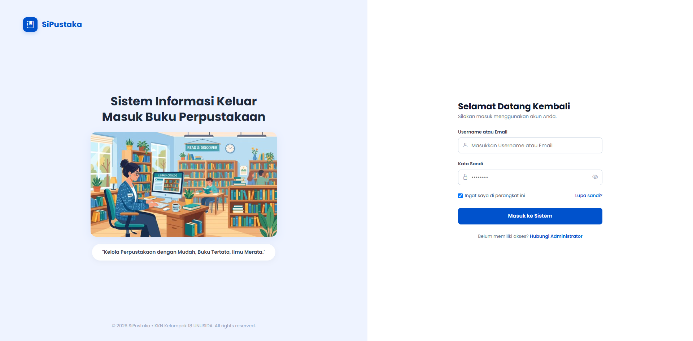

BUKU PANDUAN PENGGUNAAN
SISTEM INFORMASI PERPUSTAKAAN (SIPUSTAKA)

Tim KKN Kelompok 18 UNUSIDA
Tahun Ajaran 2025/2026
KECAMATAN KREMBUNG KABUPATEN SIDOARJO
2026
Puji syukur kami panjatkan ke hadirat Tuhan Yang Maha Esa atas terselesaikannya penyusunan Buku Panduan Penggunaan Sistem Informasi Perpustakaan (SiPustaka) SDN Kedungsumur 03.
Buku pedoman ini disusun dengan tujuan memberikan panduan teknis yang komprehensif, runtut, dan mudah dipahami bagi pihak pengelola perpustakaan serta para peserta didik (Siswa) di lingkungan SDN Kedungsumur 03 dalam memanfaatkan sistem informasi perpustakaan berbasis digital.
Dengan adanya sistem SiPustaka, tata kelola sirkulasi buku perpustakaan, pencatatan peminjaman, pengembalian, inventarisasi buku fisik dan e-book digital, kenaikan kelas massal, hingga rekapitulasi laporan perpustakaan dapat dijalankan secara terstruktur.
Semoga buku panduan ini dapat memberikan manfaat nyata dalam mendukung peningkatan literasi dan efisiensi administrasi sekolah.
1.1 Latar Belakang
Perpustakaan sekolah memegang peranan krusial sebagai sumber belajar utama bagi peserta didik dalam rangka meningkatkan budaya literasi. Namun, pengelolaan perpustakaan secara manual sering kali menimbulkan berbagai kendala operasional, seperti ketidakakuratan pencatatan stok buku, keterlambatan pelacakan peminjaman, serta kesulitan dalam rekapitulasi laporan berkala.
Untuk mengatasi tantangan tersebut, dikembangkan sistem informasi terintegrasi bernama SiPustaka di lingkungan SDN Kedungsumur 03. Sistem ini mengadopsi teknologi berbasis komputasi awan yang dapat diakses secara fleksibel, aman, dan efisien.
1.2 Tujuan dan Manfaat
Penerapan sistem informasi SiPustaka memiliki tujuan dan manfaat sebagai berikut:
- Mendigitalkan inventarisasi koleksi buku perpustakaan secara rapi dan terpusat.
- Mempermudah pencatatan sirkulasi peminjaman dan pengembalian buku dengan durasi baku 7 hari.
- Menyediakan fasilitas katalog buku fisik dan buku digital (e-book) yang dapat diakses langsung oleh siswa.
- Menyederhanakan pengelolaan data anggota siswa melalui fitur otomatisasi kenaikan kelas massal tahunan.
- Menghasilkan laporan analitik dan rekapitulasi sirkulasi perpustakaan yang siap dicetak sewaktu-waktu.
1.3 Alamat Akses dan Kompatibilitas Perangkat
Sistem informasi SiPustaka bersifat berbasis web (web-based) dan dapat diakses melalui alamat resmi:
https://sipustaka-sdnkedungsumur03.vercel.app
Aplikasi ini telah dioptimalkan agar dapat berjalan dengan baik pada komputer, laptop, tablet, maupun telepon pintar (smartphone) menggunakan peramban standar seperti Google Chrome, Microsoft Edge, atau Mozilla Firefox.
1.4 Pembagian Hak Akses Pengguna
Sistem membedakan hak akses ke dalam dua kategori pengguna demi menjamin keamanan dan ketertiban administrasi perpustakaan sekolah:
| Peran | Kredensial Masuk | Kewenangan dan Hak Akses |
|---|---|---|
| Admin | Username / Email Admin dan Kata Sandi | Memiliki hak penuh mengelola data buku, data anggota siswa, transaksi sirkulasi peminjaman/pengembalian, kenaikan kelas massal, dan pencetakan laporan. |
| Siswa | Username / NIS Siswa dan Kata Sandi | Melihat dashboard siswa, menjelajah katalog buku (mode galeri & tabel), membaca e-book online, memantau status pinjaman pribadi, dan mengubah profil. |
Dengan pembagian hak akses ini, setiap entitas pengguna dapat berinteraksi secara aman sesuai dengan tugas pokok dan fungsinya dalam ekosistem perpustakaan digital sekolah.
2.1 Alur Masuk (Login) Sistem
Prosedur masuk ke dalam portal siswa dilakukan dengan langkah-langkah berikut:
- Buka peramban dan akses alamat sipustaka-sdnkedungsumur03.vercel.app.
- Ketikkan Username atau NIS serta Kata Sandi siswa.
- Klik tombol "Masuk ke Sistem". Sistem akan memverifikasi akun dan membuka Portal Siswa.
2.2 Tampilan Dashboard Siswa
Setelah masuk, siswa disajikan Dashboard interaktif yang memuat ringkasan statistik (Total Pinjaman Aktif, Total Pengembalian Terlambat, Total Buku Dibaca) serta tabel pemantauan peminjaman aktif.
2.3 Pencarian dan Eksplorasi Katalog Buku
Siswa dapat mencari dan menjelajahi seluruh koleksi bahan bacaan perpustakaan sekolah melalui menu "Koleksi Buku" yang dilengkapi fitur pencarian pintar, filter kategori, ketersediaan stok fisik, dan akses e-book digital.
Katalog buku menyediakan 2 pilihan mode visualisasi antarmuka:
- Mode Galeri (Grid): Menampilkan kartu visual sampul buku, judul, penulis, kategori, status stok fisik, dan label ketersediaan E-Book.
- Mode Tabel: Menampilkan data buku dalam baris tabel ringkas berstruktur (Judul, Penulis, ISBN, Kategori, Stok).
2.4 Detail Informasi Buku dan Pembaca E-Book Digital
Menekan tombol "Lihat Detail Buku" membuka dialog informasi lengkap buku (ISBN, Penulis, Penerbit, Tahun, Sinopsis) serta tombol "Baca Online" untuk membaca PDF langsung di layar dan tombol "Unduh PDF" untuk membaca offline.
2.5 Pemantauan Menu Peminjaman Saya
Menu "Peminjaman Saya" memuat daftar buku fisik yang sedang dipinjam, tenggat pengembalian, serta histori riwayat peminjaman buku yang telah selesai dibaca.

2.6 Prosedur Pemulihan Kata Sandi (Lupa Password)
Apabila siswa lupa kata sandi akunnya, pemulihan mandiri dapat dilakukan dengan menekan tautan "Lupa sandi?" pada halaman login, memasukkan email terdaftar, menyalin 6-digit kode OTP dari email, dan menyimpan kata sandi baru.
2.7 Pengaturan Profil dan Kata Sandi Siswa
Melalui menu "Profil Saya", siswa dapat meninjau kartu identitas (NIS, Kelas, Status Keaktifan Akun, Statistik Bacaan) serta memperbarui alamat email dan mengganti kata sandi mandiri.
3.1 Tampilan Dashboard Admin
Halaman Dashboard Admin memberikan ringkasan operasional perpustakaan secara menyeluruh dan *real-time*: indikator statistik utama (Total Buku, Total Anggota, Peminjaman Aktif, Keterlambatan), tabel pemantauan sirkulasi aktif, dan diagram distribusi kategori koleksi.
3.2 Pengelolaan Master Data Buku
Menu "Data Buku" memuat basis data buku perpustakaan. Admin dapat melakukan pencarian, penyaringan kategori, pemantauan stok fisik, pengubahan data (kuning), dan penghapusan data (merah).
3.3 Formulir Tambah Buku dan Unggah Berkas Digital
Penambahan judul buku baru dilakukan dengan menekan tombol "+ Tambah Buku", melengkapi data bibliografi, mengunggah foto sampul (maks. 10 MB), dan berkas E-Book PDF opsional (maks. 25 MB).

3.4 Pengelolaan Master Data Anggota Siswa
Menu "Anggota" memuat basis data seluruh peserta didik SDN Kedungsumur 03 dari Kelas 1 hingga Kelas 6 untuk pembaruan data, pengaturan keaktifan akun, dan pendaftaran siswa baru.
a. Menambahkan Anggota Siswa Baru: Menekan tombol "+ Tambah Anggota" untuk mendaftarkan siswa baru dengan mengisi NIS, Nama, Kelas, Email, Username, dan Kata Sandi awal.
b. Menghapus Siswa Lulus Secara Massal: Menekan tombol merah "Hapus Siswa Lulus" untuk membersihkan data alumni/lulus secara serentak dengan konfirmasi pengamanan.

3.5 Prosedur Kenaikan Kelas Massal Otomatis
Fitur "Kenaikan Kelas Massal" menaikkan jenjang seluruh siswa aktif (Kelas 1 → 2, ..., Kelas 6 → LULUS Alumni) secara serentak dengan 1-klik pada pergantian tahun ajaran baru.
3.6 Transaksi Peminjaman Buku
Pencatatan sirkulasi peminjaman buku fisik dilakukan melalui menu "Peminjaman" dengan alur seleksi terpadu yang aman dan terstruktur:
- Klik tombol biru "+ Tambah Peminjaman" pada tabel sirkulasi.
- Pilih siswa peminjam dan pilih judul buku (*stok > 0*). Tanggal jatuh tempo baku otomatis ditetapkan 7 hari ke depan.
- Klik tombol "Simpan Peminjaman". Sistem memotong stok buku secara aman (*LockService*).
Berikut adalah jendela seleksi siswa aktif dan koleksi buku tersedia pada alur transaksi peminjaman:
3.7 Transaksi Pengembalian Cepat (Quick Return)
Ketika siswa mengembalikan buku, admin menekan tombol hijau "Kembali" pada tabel sirkulasi dan mengonfirmasi dialog pengamanan. Status otomatis berubah menjadi "Dikembalikan" (Selesai) dan stok buku fisik kembali pulih.
3.8 Rekapitulasi dan Pencetakan Laporan Perpustakaan
Menu "Laporan" memfasilitasi rekapitulasi data sirkulasi berdasarkan rentang tanggal dan status transaksi untuk dicetak sebagai lembar laporan fisik pengesahan.
3.9 Pengaturan Profil dan Kata Sandi Admin
Admin dapat memperbarui identitas, alamat email instansi, serta mengganti kata sandi operasional melalui menu "Profil Saya".
4.1 Kesimpulan
Sistem Informasi Perpustakaan (SiPustaka) SDN Kedungsumur 03 hadir sebagai inovasi digital yang mengoptimalkan manajemen perpustakaan sekolah. Dengan sistem terintegrasi ini, pencatatan sirkulasi buku, inventarisasi data, pemantauan peminjaman siswa, serta pelaporan administrasi dapat dilakukan secara efektif, transparan, dan akurat.
4.2 Saran Penggunaan
- Admin perpustakaan disarankan melakukan pencatatan transaksi peminjaman dan pengembalian secara tertib dan disiplin setiap hari kerja.
- Siswa diimbau untuk selalu mengingat kredensial akun masing-masing dan menjaga keutuhan buku yang dipinjam serta mengembalikannya tepat waktu.
- Pencadangan data berkala dan pencetakan laporan rekapitulasi disarankan dilakukan pada setiap akhir semester atau akhir tahun ajaran.